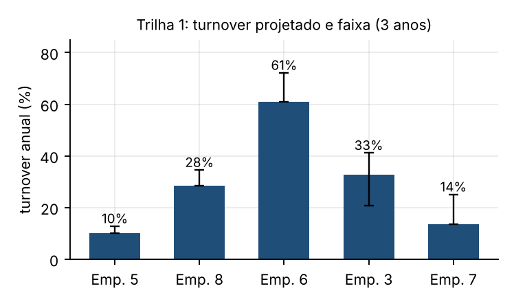
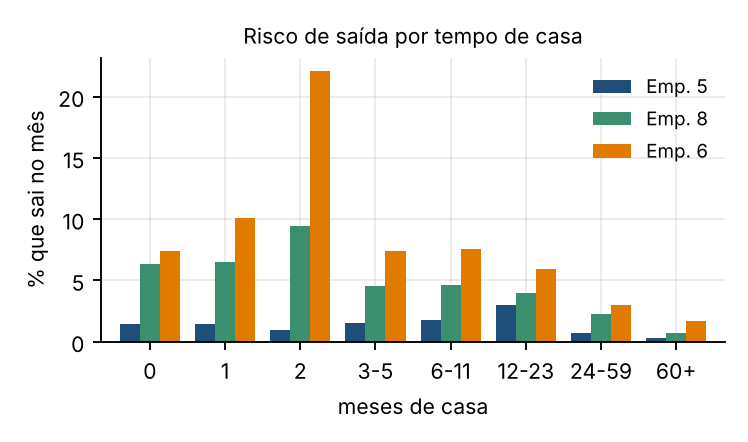
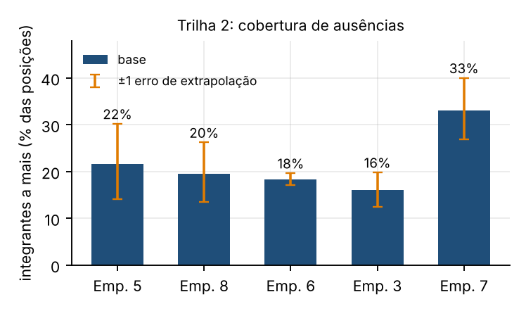
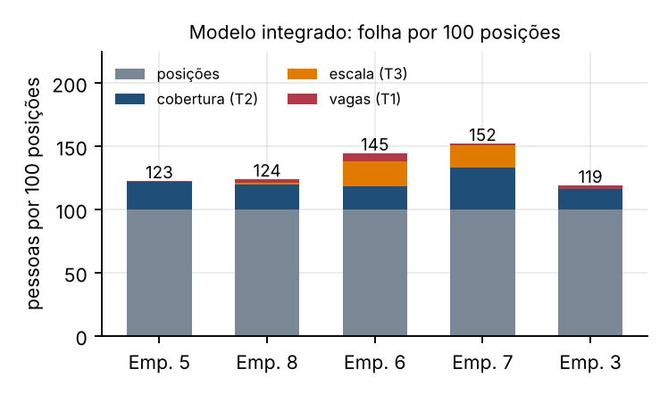
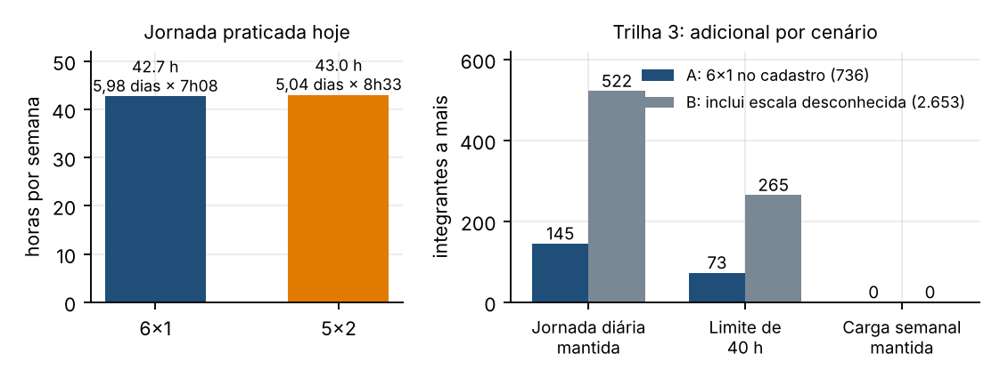
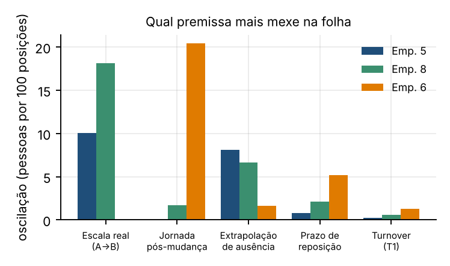

O preço de uma licitação de 3 anos depende de quantas pessoas são necessárias e de quanto elas custam. Estimamos as três parcelas pedidas (rotatividade, quadro extra para ausências e quadro extra para a escala 5x2) e as reunimos numa fórmula única por posição de trabalho, com custo em reais e incerteza explícita. Os principais resultados:
| Empresa | Ativos operacionais | Turnover (% ao ano) | Quadro extra para ausências (% das posições) | Adicional pela escala 5x2 (pessoas, A; teto B) | Folha por 100 posições |
|---|---|---|---|---|---|
| 5 | 2.824 | 10,2 | 21,6 | 0 (teto 232) | 123 |
| 8 | 978 | 28,5 | 19,7 | 14 (teto 159) | 124 |
| 6 | 760 | 61,1 | 17,9 | 125 | 145 |
| 3 | 113 | 32,8 | 14,8 | 0 | 119 |
| 7 | 45 | 13,6 | 32,2 | 6 | 152 |
O desafio. O Grupo HP precisa projetar o custo de prestar um serviço durante 3 anos. Esse custo é, essencialmente, posições × (1 + quadro extra) × salário. As três trilhas estimam partes diferentes do quadro: quantas pessoas entram e saem (T1), quantas a mais cobrem ausências sem descumprir o contrato (T2) e quantas a mais seriam necessárias se a escala mudar de 6x1 para 5x2 (T3). Elas se conectam: a rotatividade define quão novo é o quadro, e isso afeta férias e faltas (T1→T2); a mudança de escala multiplica a folha inteira, incluindo a cobertura (T2→T3).
Os dados. Cadastro de 20.001 vínculos (admissões desde 1969), ponto diário com 601.474 linhas e 5.052 afastamentos, entre 01/01/2025 e 30/09/2026, mais tabelas de apoio. Antes de modelar, fizemos uma auditoria, que mudou o desenho do trabalho:
Tratamos cada artefato de forma objetiva e documentada (por exemplo, a ausência curta das funções "demais" da empresa 8 sairia em 9,5% sem a correção, contra 3,0% depois).
Princípios. (i) Métodos simples e auditáveis, porque a base é curta e tem mudanças de regime; (ii) todo método candidato é comparado por backtest (prever o passado e conferir); (iii) a incerteza é medida e propagada, não escondida; (iv) as três trilhas partem de uma base comum, a posição de trabalho (pessoa escalada num dia).
Montamos a série mensal de admissões, rescisões e headcount por empresa (2016–2026) e calculamos o turnover pela fórmula do enunciado, [(admissões + rescisões)/2] / headcount × 100, com headcount igual aos vínculos existentes no mês. Testamos 8 estratégias de projeção (médias de 6, 12, 24, 36 e 60 meses, médias ponderadas e mistura de curto e longo prazo) e um modelo de coortes por tempo de casa, por backtest de origem móvel: a cada mês de origem, projeta-se 12, 24 ou 36 meses e compara-se com o turnover realizado.


Definimos a perda de carga como a fração do trabalho programado que deixa de ser entregue por ausência. Para entregar N posições, a folha precisa de N/(1 − perda) pessoas, logo o quadro extra é N × perda / (1 − perda). Como férias e afastamentos têm jornada prevista zero no ponto, decodificamos a situação do dia (F férias, P doença ou INSS, T acidente, I/L/M/E/Y licenças) e contamos esses dias pela carga que o integrante teria. A perda foi dividida em três blocos, cada um com seu tratamento:
| Bloco | O que é | Como entra |
|---|---|---|
| Férias (planejada) | 30 dias por ano para quem tem 1 ano de casa ou mais | taxa entre elegíveis (8,0% a 8,4%, coerente com 30/365) × parcela do quadro com esse direito, projetada com o risco por tempo de casa da T1 |
| Afastamento prolongado | INSS, acidente, aposentadoria por incapacidade, licenças | nível médio (estado persistente) |
| Ausência curta (imprevista) | faltas, atestados de até 15 dias, abonos | nível médio mais uma reserva (~2,5 p.p.) para cobrir o dia ruim com 95% de nível de serviço, calibrada pela variabilidade diária |
A ligação com a T1 é quantitativa: quem tem menos de 1 ano de casa não tira férias, então empresas de rotatividade alta (empresa 6) têm menos férias (~4,6% da carga) e mais faltas (5,1% nos primeiros 6 meses contra 2,4% a 2,5% depois de 2 anos). Validamos o mecanismo: aplicando a taxa de férias de 2025 à parcela com direito em 2026, prevemos 4,3% contra 4,6% observado; sem o ajuste de tempo de casa, 6,9%.
Para células (empresa × grupo de função) com pouco ou nenhum dado, usamos ponderação por credibilidade: a taxa da célula é combinada com a referência geral com peso n/(n + 100), e uma célula sem dado fica totalmente na referência. Aprendizes ficam fora (27% a 35% da carga deles é horário de estudo abonado).


Para entregar o mesmo trabalho, a folha varia na razão inversa da carga semanal de cada integrante: folha nova / folha atual = horas semanais atuais / horas semanais novas. Como o fator vale para a folha inteira, a cobertura de ausências (T2) já está contida. Medimos no ponto o que cada escala realmente trabalha (dias normais, sem férias, afastamento ou feriado):
O 5x2 praticado hoje é a mesma carga semanal comprimida em 5 dias, e não uma jornada menor. Por isso o adicional não tem resposta única: depende do que acontece com a jornada. Modelamos três cenários, aplicados a duas populações (A, os 736 vínculos em 6x1 no cadastro; B, que soma 1.917 tripulações de "jornada mensal" e "revezamento", cuja escala real não consta nos dados e que supomos 6x1 como teto). A rotatividade entra como sensibilidade: o cadastro não permite medir o efeito da escala nela, porque a escala dos desligados é artefato (por exemplo, 98% dos motoristas de caminhão da empresa 6 em 5x2 no cadastro estão desligados, e a maioria tem o mesmo horário genérico).

Com a posição como base, cada trilha vira um multiplicador:
a = perda por ausência (T2); s = parcela da folha em 6x1 e f = fator de folha (T3); T = turnover anual (T1), que gera vagas abertas enquanto uma saída não é reposta. Para a operação atual, o quadro ativo já contém a cobertura (posições = folha × (1 − a)). Essa base única resolveu uma inconsistência que tínhamos antes (a T2 tratava o quadro ativo como posições e a T3 como folha, o que dava 977 pessoas de cobertura em vez de 809). O custo é pessoas × salário de referência × 12 × encargos.
| Trilha 1 (3 anos) | Base | Faixa (P10 a P90) | Confiança |
|---|---|---|---|
| Empresa 5 | 10,2% | 10,0% a 12,8% | alta |
| Empresa 8 | 28,5% | 28,5% a 34,5% | média-alta |
| Empresa 6 | 61,1% | 61,1% a 72,1% | baixa (regimes mudam) |
| Empresas 3, 7, 4 | 32,8%, 13,6% e 27,0% | 20,7 a 41,1%, 13,6 a 25,0% e 20,4 a 46,4% | média-baixa, média e baixa |
| Trilha 2: quadro extra (% das posições) | Ano 1 | Ano 3 | Faixa de cenários (ano 3) | Confiança |
|---|---|---|---|---|
| Empresa 5 | 21,6 | 21,7 | 19,3 a 24,0 | baixa (sem dado próprio) |
| Empresa 8 | 19,7 | 19,4 | 17,3 a 21,5 | média-baixa |
| Empresa 6 | 17,9 | 18,6 | 16,2 a 21,3 | alta |
| Empresa 3 | 14,8 | 16,6 | 14,6 a 18,6 | média |
| Empresa 7 | 32,2 | 33,7 | 25,2 a 43,6 | baixa (46 pessoas) |
| Trilha 3: pessoas a mais | Jornada diária mantida (base) | Limite semanal de 40 h | Carga semanal mantida |
|---|---|---|---|
| População A (736 em 6x1: 125 na empresa 6, 14 na 8, 6 na 7) | 145 | 73 | 0 |
| População B (A + 1.917 com escala desconhecida) | 522 | 265 | 0 |
Operação atual em pessoas. Os 4.727 do quadro ativo se decompõem em 3.918 posições e 809 de cobertura de ausências. Com a mudança de escala (+145) e as vagas por rotatividade (+95), a folha necessária vai a 4.967 (+240, ou +5,1%). A empresa 6 é a que mais muda (de 760 para 929, +22%).
Como usar. O resultado foi pensado para precificar. Para cada 100 posições do edital, a folha deve ter 123 pessoas na empresa 5, 124 na 8 e 145 na 6 (caso base). Os componentes (cobertura, escala e vagas) aparecem separados, então a SIAN pode excluir qualquer um conforme as exigências do contrato (por exemplo, o afastamento prolongado, ~4% a 5%, costuma ser coberto por contratação temporária).
| Custo (R$ milhões) | Só salário, por ano | Com encargos de 1,7×, por ano | Com encargos, 3 anos |
|---|---|---|---|
| Posições | 120,2 | 204,3 | 612,9 |
| Cobertura de ausências (T2) | 25,0 | 42,5 | 127,4 |
| Mudança de escala (T3, população A) | 3,4 | 5,7 | 17,2 |
| Vagas por rotatividade (T1) | 2,6 | 4,4 | 13,1 |
| Total | 151,1 | 256,8 | 770,4 |
O custo adicional de T1, T2 e T3 é de R$ 158 milhões em 3 anos (25,7% sobre o custo das posições), a valores constantes e com salário de referência do cadastro. Os encargos (1,7×) e os 30 dias para repor uma saída são premissas nossas, e a sensibilidade está no código. A empresa 5 concentra 65% do custo salarial, e é a de menor confiança.

O que mais mexe no resultado não é a estatística. Em ordem de impacto:
Pedimos à SIAN: o ponto e os afastamentos da empresa 5, a escala real dessas tripulações e a jornada prevista após a mudança.
Todo o código está no repositório da equipe (src/, notebooks/, resultados/, requirements.txt). Os cinco notebooks rodam em ordem (01 perfil dos dados, 02 Trilha 1, 03 Trilha 2, 04 Trilha 3, 05 modelo integrado) e foram testados em ambiente limpo com pip install -r requirements.txt. Cada notebook traz as saídas, as premissas e as limitações da sua parte.